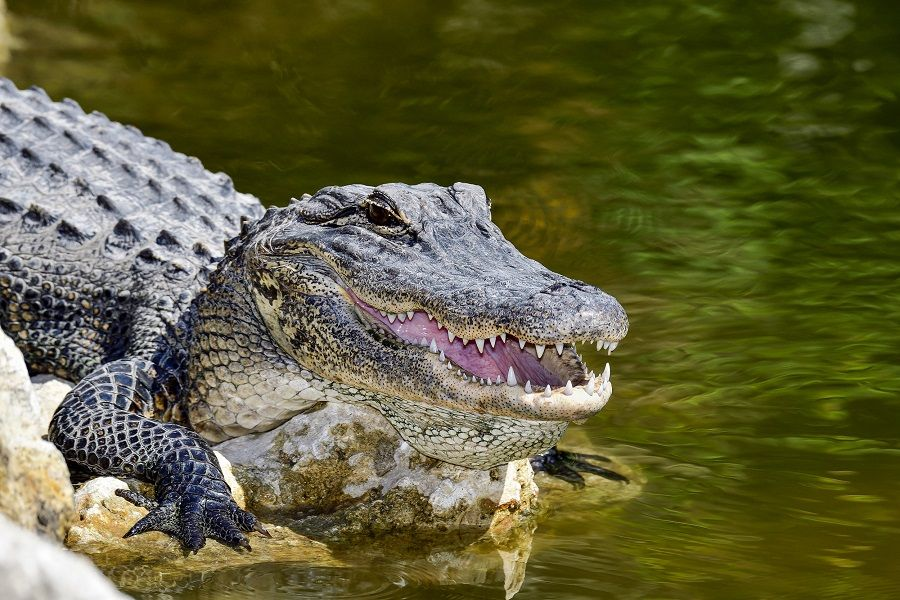

|  |
Buaya VS Aligator |
||||||
| Buaya | Bentuk Seperti V dan Lebih Sempit | Gigi Terlihat Saat Menutup Mulut | Lebih dari 5 Meter | Berenang dengan Kecepatan 15km/jam | Cokelat Pucat yang Agak Terang | Bisa Hidup di Air Asin | Sangat Tempramen dan Dapat Menyerang Manusia |
| Aligator | Bentuk Seperti U dan Lebih Luas | Gigi Tidak Terlihat Saat Menutup Mulut | Maximum 4 Meter | Berenang dengan Kecepatan 32km/jam | Abu-abu Agak Kehitaman | Hanya Bisa di Air Tawar | Biasanya Akan Lari Kembali ke Air Ketika Ada Manusia |